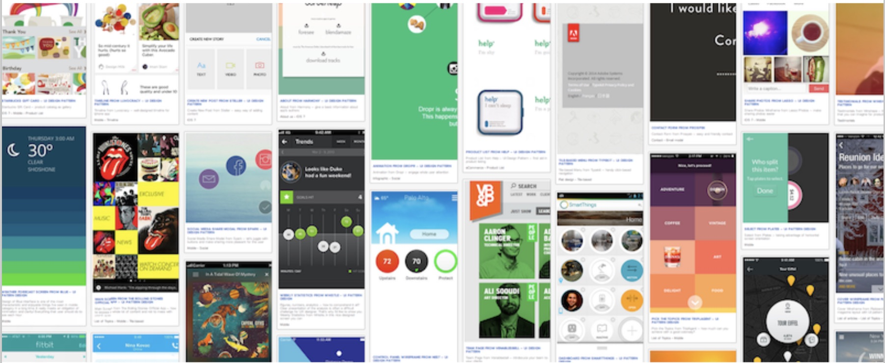
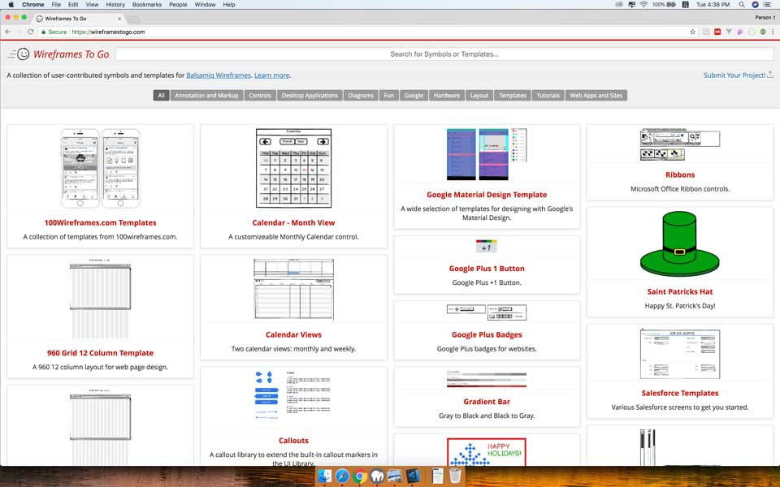
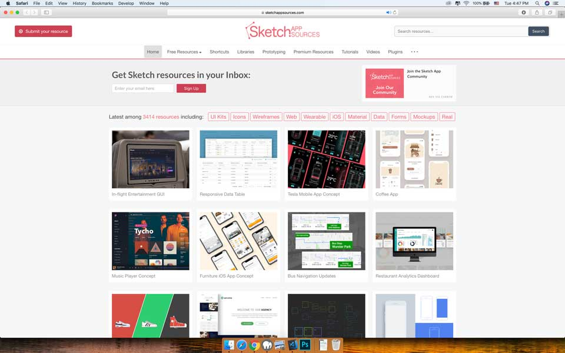
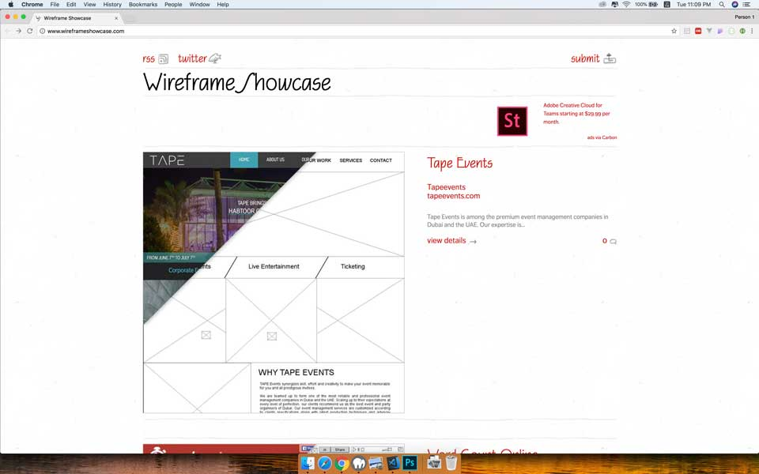
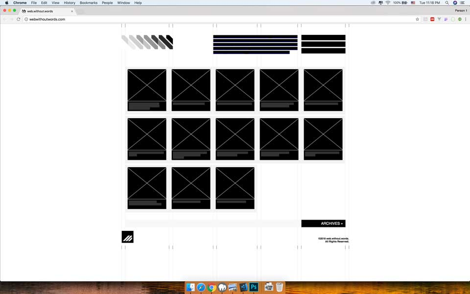

Wireframe trong thiết kế sản phẩm (Phần 3): Mẫu thiết kế
Ngày 17 tháng 7 năm 2018
Lời người dịch
Tiếp tục loạt bài lược dịch của cuốn "The Guide to Wireframeing". Ở phần này có một số mình không tìm được nghĩa tiếng Việt tương tự nên sẽ để nguyên bản tiếng Anh.
Riêng phần này, có một số resources đã không còn nên mình có bổ sung thêm một vài resources theo xu thế hiện nay (năm 2018).
Danh sách bài viết trong loạt bài:
- Phần 1: Một góc nhìn thực tế về Wireframe
- Phần 2: Các sắc thái của Wireframe
- Phần 3: Mẫu thiết kế
- Phần 4: Nguyên tắc thiết kế wireframe
Dẫn nhập
Trong thiết kế, có những lúc chúng ta sẽ lặp đi lặp lại một công việc nhiều lần. Do đó, những mẫu có sẵn sẽ giúp ta tiết kiệm được thời gian và công sức. Phần này, chúng ta sẽ nói về mẫu thiết kế và những thư viện có sẵn.
Cho dù bạn mới bắt đầu làm việc với wireframe hay prototype trong vài năm hoặc trong một thời gian dài, bạn sẽ thấy điều này hữu ích do luôn cập nhật các xu hướng thiết kế mới nhất dành cho web và di động. Bạn có thể tự do sáng tạo thêm, hoặc tìm cảm hứng cho sản phẩm và gắn trực tiếp vào các công cụ thiết kế như Sketch, Balsamiq,...
Bạn có thể tham khảo thêm các mẫu thiết kế mới nhất tại UXPin như Web Design Trends.
Importable Libraries
Từ này mình không biết dịch thế nào nên để nguyên. Đại khái là các mẫu thiết kế có sẵn, mình có thể import trực tiếp vào công cụ thiết kế để tiết kiệm thời gian.
Wireframes To G o
Địa chỉ: https://wireframestogo.com/
Có rất nhiều mẫu thiết kế do cộng đồng đóng góp. Tại đây, bạn có thể tìm thấy vô số UI Component hoặc wireframe cho toàn bộ trang web. Lưu ý, các mẫu thiết kế tại trang này chỉ hỗ trợ cho Balsamiq Mockups.
Sketch App Resources
Địa chỉ: https://www.sketchappsources.com
Có lẽ bạn đã biết nhiều về Sketch, một công cụ thiết kế phổ biến hiện nay và chỉ chạy trên Mac OS. Trang này có nhiều mẫu dành cho Web, Mobile, Wearable và icon.
Figma Resources
Địa chỉ: https://www.figmaresources.com/
Figma là đàn em của Sketch. Về chức năng thì tương tự và có một số điểm hay hơn Sketch, hỗ trợ đa nền tảng như Mac OS, Windows và Web. Trang này cũng tương tự như Sketch App Resources.

Standalone Libraries
Những mẫu thiết kế ở phần này không thể gắn vào các công cụ thiết kế. Nó có thể là hình ảnh, các mẫu dưới dạng giấy,...
I Love Wireframes
Địa chỉ: https://www.flickr.com/groups/ilovewireframes
Nhiều mẫu thiết kế được cộng đồng đóng góp vào một group trên Flick.

Wireframe Showcase
Địa chỉ: http://www.wireframeshowcase.com/
Trang này vô số wireframe hoàn chỉnh của một trang web hoặc một phần trong một trang web, bao gồm wireframe và hình ảnh cuối cùng sau khi hoàn thiện.
Web Without Words
Địa chỉ: http://webwithoutwords.com/
Một trang web khá thú vị, loại bỏ tất cả hình ảnh và chữ, trừu tượng các thành phần bằng các kí hiệu dùng trong wireframe.
Một số trang khác
Ngoài ra, bạn có thể tham khảo bài viết của Creative Tim, nơi có các template đơn giản nhưng đẹp đẽ từ UI đến Code. Bài viết "Why you should start using an UI Kit?" nói về tại sao bạn nên sử dụng UI Kit khi bắt đầu một dự án mới.
Standalone Libraries
- Call To Idea - https://calltoidea.com
- Wireframes Magazine - http://wireframes.linowski.ca/tag/wireframe/
- UX Archive - http://uxarchive.com/
- Behance - https://www.behance.net/search?search=wireframe
- Dribbble - http://dribbble.com/search?q=wireframe
- Google Image Search - http://google.com/#q=wireframes
- Pinterest - http://pinterest.com/search/pins/?q=wireframes
Web Only
- UI Patterns - http://ui-patterns.com/patterns
Mobile Only
- PTTRNS - http://pttrns.com
- Android App Patterns - http://android-app-patterns.com
- Inspired UI - http://inspired-ui.com
- Mobile Patterns - http://mobile-patterns.com
Tham khảo
- UXPin, "The Guide to Wireframeing for designers, PMs, engineers and anyone who touches product"
- Vietnam UX/UI Designers, "Những chủ đề có giá trị xem lại"